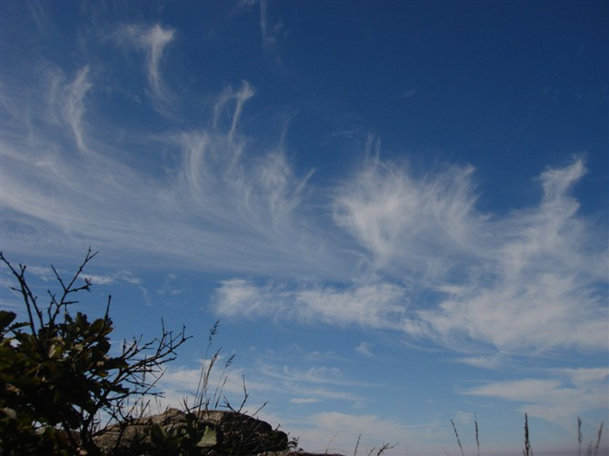

[转寄/推荐][转贴][删除][修改][设置可RE属性][上一篇][返回讨论区][下一篇][回文章][同主题列表][同主题阅读][从这里展开]
发信人: zzmax (zzmax), 信区: outdoor
标 题: 阳春三月，让清凉飞！！ 野协2011年清凉峰召集
发信站: 饮水思源 (2011年03月12日18:40:53 星期六)
清凉峰之感受清凉：
清凉峰,位于皖浙交界,浙江天目山的主峰，海拔1787.2米，为安徽第二高峰,面积15平方公
里。境内层峦叠嶂，树林茂密，人迹罕至，生态完整，尤其野生动植物资源丰富。既有类
似黄山峻峭奇丽的景色，又有山中“台地”和群顶“小平原”等独特地形，被江浙沪一带
驴友视为初级户外训练的大本营，在春夏秋三季，攀登清凉峰的难度并不是很大,只需要一
定的体力和简单装备即可。
徽杭古道在杭徽公路通车前，是徽州人由其是绩溪人通往沪、杭的捷径，比绕道昱岭
关近百余里。在徽杭古道上，每隔5里就设一个茶亭，供过往路人休息。过去与绩溪相毗邻
的昌化人用自己纺织的棉织品沿古道到绩溪换回粮食与棉花，古道成为两地人的生命线。
时至今日古道还是当地老百姓的一条重要交要道
“江南第一关”又名瑶瑶岩，在伏岭乡东部，海拔424米。是徽杭古道重要关隘，是清
凉峰主要通道。“江南第一关”山势险峻，怪石嵯峨，其中以磨盘石、天冠石、将军石最
奇。自岩角至关口经1400余级台阶。关口刻有“径通江浙”的魏体大字。 “江南第一关”
是因太平天国是待王李世贤与1861年率部于此，赞为天险而得名。
清凉时间：3月18日晚六七点出发，20日傍晚回归~
活动类型：登山&&徒步。
活动强度：中等偏下。
活动费用：290元/人，多退少补（非会员310元）
包车费用：169元/人
门票：38元/人
装备费：50元/人
保险费：10元/人
腐败费：21元/人
其他：2元/人
报名方式：请留意最近协会召集短信,有疑问请与15000117753杨同学联系（电话联
系）。
行程安排：
D1
1.3月18日晚六点半在庙门集合出发。
车上做自我介绍及破冰游戏，补充睡眠。
2. 半夜到达伏岭小学门口，扎营休息。
D2
1. 6点起床，撤营，早餐，7点半出发。
沿徽杭古道行进
大概1个半小时左右到达‘江南第一关’。
2.11：30左右，到达蓝天凹，午饭，赏风景，休息。
3. 12：30再次出发。
4. 15:00左右抵达野猪塘，扎营，晚饭
6. 21:00休息，准备第三天登顶。
D3
1. 5：30要登顶的同志们得起床了，简单早餐，6：30往山顶出发。
2. 其他的同志们睡到自然醒。9：00左右起来
3. 登顶的同志们10：30左右回到营地，稍事休息，撤营，返回蓝天凹。
4. 12:30左右抵达蓝天凹。腐败一顿。
5. 14：00出发返回上海。
6. 19：00左右抵达上海。
 screen.width - 200){this.width = screen.width - 200}">
|
[转寄/推荐][转贴][删除][修改][设置可RE属性][上一篇][返回讨论区][下一篇][回文章][同主题列表][同主题阅读][从这里展开]